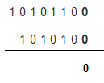
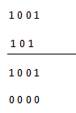
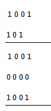
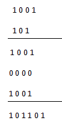

0 * 0 = 0
1 * 0 = 0
0 * 1 = 0
1 * 1 = 1 (there is no carry or borrow for this)
As we can see that if we can compare these rules of binary multiplication with that of decimal multiplication we will not have any difference at all. So it is a comparatively easy method than the previously discussed two operations.
Now we will look into the procedure in a more detailed matter and step by step to understand it better.
Let us take two binary numbers A = 1001 and B = 101 we want to find out A * B

This is the first step in this step the least significant bit or the right most bit of B is multiplied with all the digits of A from the right side and the result is written.
Here the steps took place are 1 * 1 = 1, 1 * 0 = 0, 1 * 0 = 0, 1 * 1 = 1.

Similarly in this step all the elements of A are respectively multiplied with the second most significant bit i.e. 0. From the table above we can see that any digit 0 or 1 when multiplied by 0, the result is 0 so all the elements in this step is 0. Now we will proceed to the next step.

In this step the left most digit of B which is 1 is multiplied by all the digits of A and the result is same as that of the first step.

Finally all these elements are added and we ultimately get the desired result of binary multiplication. If we look carefully the binary addition method is applied here which is very simple to understand.
Now, where this binary multiplication method is applied in digital electronics. It is applied to calculate the truth table of AND gate which is also discussed in the different article.
 by
by